Inference for Paired Samples
1 Inference for Multiple Variables
So far, we have been dealing with relatively simple inferences about measurement of a single variable within a single population. In contrast, we often want to compare the measure of a specific variable among multiple populations to determine if there is a difference or not between the populations. To do this, we will need to know how to collect and explore data from multiple populations for comparison.
Response variable: the variable of interest, the focus on the study. Researchers want to observe how this variable changes.
Explanatory variable: the variable that (potentially) accounts for the changes in the response variable.
The Explanatory and Response Variables could be either Categorical or Quantitative and the type of variable will influence the type of analysis we do.
We are going to focus on the following scenario:
- Categorical Explanatory Variable and Quantitative Response Variable.
Once we have determined our variable types, we have several considerations to make before we decide which data collection methods and subsequent statistical method to choose based on the response to four questions:
- How many outcomes/populations are we considering for our explanatory variable?
- If more than one outcome/population, are the outcomes related (paired) or independent?
- What type of response variable are we considering, discrete or continuous?
- Does our data meet the necessary assumptions in order to use a parametric method (t-distribution)? We will assess each of these questions in turn, but first let’s discuss how we can collect data to compare populations.
We will discuss two situations for how individuals in our data relate to one other:
- Independent Cases: cases in each group are unrelated to one another with respect to the variable of interest
- Dependent Cases (Matched-Pairs): cases in each group are meaningfully matched with one another by some shared characteristic(s) with respect to the variables of interest.
2 Data Collection to Compare Groups
Recall one of the first big ideas from this course: How data are collected or generated is important if we want to make inference from it. In both experiments and surveys, randomness is necessary to insure appropriate inference.
When we are collecting data on two variables, we could do an observational study or an experiment. (Recall, we could only do observational studies with one variable). Depending on how exactly we set up our study design and study type, how samples are selected can vary.
2.1 Types of Observational Studies for Comparisons of Paired Groups
Observational Study: a study in which the researcher measures the inherent characteristics of a population for one or more variables
In our previous inferences, we estimated a single unknown population parameter. Now we want to compare two population parameters to each other. The method we use to compare the two populations depends on whether there is a relationship between the two populations or not.
- Matched-Pairs (Dependent) Samples: Randomly sample pairs of individuals (paired by some commonality of interest) and measure the values of the variables of interest
Scenario: A sociologist wishes to compare the annual salaries of heterosexual married couples to examine how gender affects income. She obtains a random sample of 50 married couples in which both spouses work and share finances, and she determines each spouse’s annual salary. Discuss the type of sampling scheme used in this study and identify the response and explanatory variables measured and the type (categorical, quantitative, etc.).
Response: Income – Quantitative/Continuous
Explanatory: Gender – Categorical/Nominal
Matched Pairs: the two groups (male/female) are matched because they are married and share finances. There is a high probability they will have similar education levels and socioeconomic background. They most likely live in the same location accounting for cost-of-living differences. Therefore, the income of one spouse is dependent on the income of the other spouse; they are dependent observations. The couples/pairs are randomly sampled, but the individuals are not because they come in pairs.
In some situations, individuals are “paired” with themselves and researchers are interested in observing changes in the values of the variables of interest at multiple points in time – these types of studies, called longitudinal studies or repeated measures studies, require more sophisticated analysis than done in this class. We will not discuss the more complicated study types of three or more observations in time, but we will discuss the special case of observations at two points in time as that is a Matched-Pairs Sampling Design.
2.2 Types of Experimental Studies for Comparisons of Paired Groups
In order to determine if there is a cause-and-effect relationship we need to control for outside sources of variability in our data with an experiment.
Experimental Study: a study in which the researcher actively controls or sets the values of the explanatory variable(s) through random assignment of the treatment to each case in order to observe a measurable effect on the response variable.
Experiments can still be structured as either matched-paired or independent, but we have more decisions to make as researchers as we are actively controlling the value at least one of the variables of interest and randomly assigning individuals to that value:
Factor: the explanatory variable(s) of interest in the experiment. The chosen set of values for the factor are the levels.
Treatments: all possible combinations (if necessary and possible) of the chosen levels for each factor. May include a control or placebo treatment.
Experimental Unit: the subject / individual / case which is randomly assigned to a treatment group
Sometimes we need to know what would happen to the response variable if the treatment was not applied. Control groups are treated identically in all respects except that they do not receive the active treatment.
A placebo is special kind of control group that is used in effectiveness of drug studies and designed to look exactly like the drug being tested. Participants do not know they are taking a placebo. Note that the placebo effect (patient believe they are better on the placebo) occurs even to patients who take the drug.
2.2.1 Randomization of Treatment Assignment
In any experiment, we are always trying to reduce any possible sources of bias.
- Randomization of assignment of units to treatment groups within the experiment reduces bias in the measurement of the response variable introduced through uncontrollable differences in experimental units.
- It is this randomization of assignment of experimental units to treatment groups that makes a study an experiment, rather than an observational study, as it is the only way to minimize the possibility of systematic effects on the response variable due to confounding variables.
2.2.2 Quick Note: Generalizability in Experimental Design
Though we can often ascertain cause-and-effect through randomization of assignment of treatments to experimental units, that does not mean our results are generalizable.
Example: The initial testing of the efficacy of the COVID-19 AstraZeneca and Oxford vaccine included 1077 health volunteers ages 18-55 years old, with 543 randomly assigned the COVID-19 vaccine and 534 a “placebo” Meningococcal vaccine. What is the scope of generalizability of the experiment?
2.2.3 Two ways to Randomize with Treatments:
I want to compare the effect of two drugs on a patient’s memory. I have designed a memory test, but need to design the experiment, particularly how to assign each treatment to the 16 patients I have available for the experiment. Consider the following two situations:
2.2.3.1 Randomizing the type of treatment (Independent)
An experiment that uses both comparison of two or more treatments and random assignments of subjects to treatments is a completely randomized design. Why is it important to randomly assign the experimental units to each treatment group?
We randomize group assignment to make sure that our results are causal and not due to some confounding variable associated with individuals.
2.2.3.2 Randomizing the order of treatments (Matched-Pairs)
If possible, the order of the treatments applied to an experimental unit in a matched pairs design is randomized. Why is important to randomize the order of the treatments (when possible)? When would randomizing order not be possible?
We randomize order of treatment to be sure there is not “learning effect” and to control for differences that may occur naturally due to timing of the treatment while controlling for individual differences at baseline. In some situations, time is the grouping factor. We cannot randomize time – in such cases the data collection method is called a longitudinal study or considered a Matched Pairs Observational Study.
3 Paired T-Test
In situations where we have two measurements on the same individual, we can calculate the difference in the values. This will change our parameter to the true mean of the differences, denoted as \(\mu_d\).
Here are the generic symbolic and verbal structures of the hypotheses:
\(H_0: \mu_d = 0\) The population mean of the differences in [ response variable + units] across [groups in order of difference] of the [population context] is zero.
\(H_1: \mu_d \{\neq, > , <\} 0\) The population mean of the differences in [ response variable + units] across [groups in order of difference ] of the [population context] is {not equal to/greater than/less than} zero.
The test statistic and confidence interval are the same as the one-sample t-test except that all statistics are calculated based on the differences and all inference is about the true mean of the differences.
- Test Statistic
\[t = \frac{\bar{x}_d - 0}{\frac{s_d}{\sqrt{n}}}\]
- Confidence Interval
\[\bar{x}_d \pm t^*\frac{s_d}{\sqrt{n}}\]
4 Case Study I: Students with Dyslexia
Dyslexia is a learning disorder which affects reading, spelling, and writing. Dyslexia is not related to intelligence or vision, but many people with dyslexia have difficulties in decoding letters and words. Most people with dyslexia can overcome the learning difficulties after receiving a specialized education program. Woodcock Johnson Tests are a set of standardized tests in diverse areas, and they are used as an assessment tool in the specialized education program. The standardized tests are designed in a way that the scores follow a normal distribution with a mean of 100. In addition to reading, writing, and spelling, researchers have hypothesized that dyslexia can affect math calculation ability because it requires decoding math symbols. The dataset \(\texttt{mathcalculation.csv}\) is a sample of 59 students with dyslexia who received the specialized education program. The column pre is the math calculation test score at the time of entering the program, and the column post is the test score after completing one year of the program. We want to determine if the students with dyslexia improve math calculation score, on average, after completion one year of the program. A significance level is fixed at \(\alpha = 0.05\).
Download the data here: mathcalculation.csv
mathscore <- read_csv("data/mathcalculation.csv", show_col_types = FALSE)
head(mathscore, 5)# A tibble: 5 × 3
id pre post
<dbl> <dbl> <dbl>
1 1 77 80
2 2 71 79
3 3 87 91
4 4 96 99
5 5 76 91In the population of students with dyslexia, we are now interested in the average change in the math calculation score after one year of the program. Here, the “change” means the post-score minus pre-score, and we can measure the individual student’s change in the data.
mathscore |>
mutate(diff = post - pre)# A tibble: 59 × 4
id pre post diff
<dbl> <dbl> <dbl> <dbl>
1 1 77 80 3
2 2 71 79 8
3 3 87 91 4
4 4 96 99 3
5 5 76 91 15
6 6 80 88 8
7 7 103 91 -12
8 8 74 76 2
9 9 80 90 10
10 10 72 70 -2
# ℹ 49 more rows4.1 Summary Statistics
We can calculate the following statistics:
df_stats(~(post - pre), data = mathscore) response min Q1 median Q3 max mean sd n missing
1 I(post - pre) -18 -4.5 2 5.5 24 1.271186 8.54568 59 0gf_boxplot(~(post - pre), data = mathscore,
xlab = "Difference in Post Score and Pre Score") |>
gf_theme(axis.text.y = element_blank())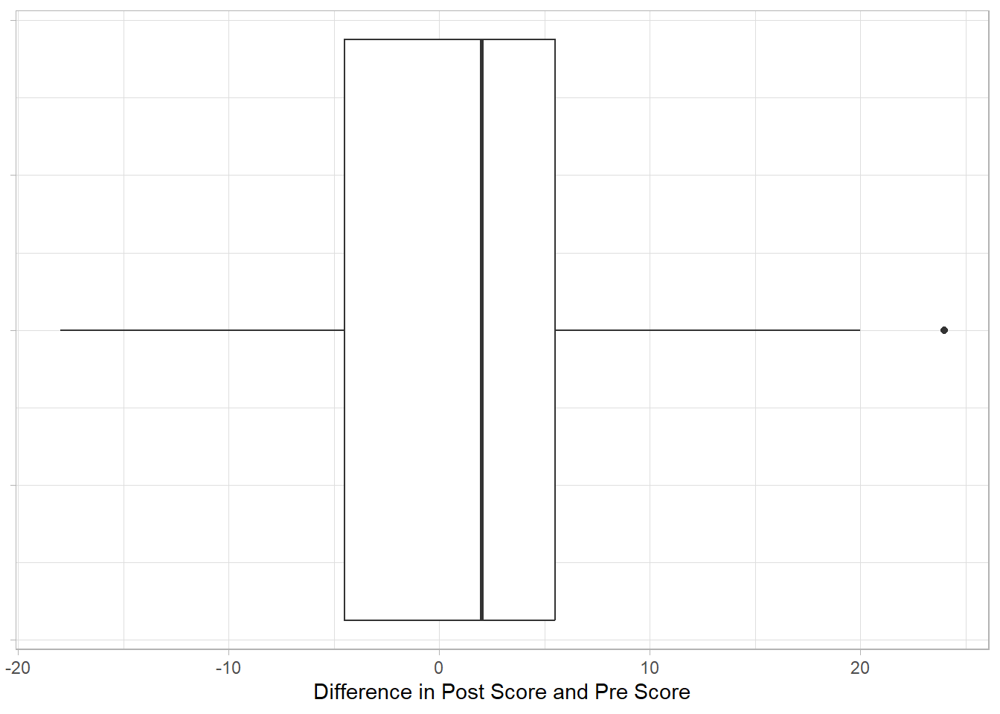
What do you notice about the differences in the scores based on the summary statistics?
4.2 Hypothesis Test
Now, let \(\mu_D\) be the population mean difference in the math calculation post and pre score for students with dyslexia.
We want to determine if the students with dyslexia improve math calculation score, on average, after completion one year of the program.
Set up the hypothesis test symbolically and verbally:
Here is the R code output for a paired test:
t.test(~(post - pre), data = mathscore, mu = 0, alternative = "greater")
One Sample t-test
data: (post - pre)
t = 1.1426, df = 58, p-value = 0.129
alternative hypothesis: true mean is greater than 0
95 percent confidence interval:
-0.5885041 Inf
sample estimates:
mean of x
1.271186 Interpret and evaluate the p-value in the context of the scenario.
Here is a 95% Confidence Interval:
t.test(~(post - pre), data = mathscore, conf.level = 0.95)$conf.int[1] -0.9558298 3.4982026
attr(,"conf.level")
[1] 0.95Interpret the confidence interval in the context of the scenario.
Evaluate the confidence interval as potential evidence for or against the results of the hypothesis test.
5 Checking Conditions for Inference
5.1 Evaluating Sufficient Sample Size Conditions
Evaluate if the sample size is sufficiently large based on whether the distribution of the sample is symmetric/normally distributed, or meets the appropriate conditions based on the type of statistical inference test being performed.
Here are the guidelines to check the sample size for the differences is sufficiently large
If the differences are not normally distributed, then the minimum sufficient sample size for pairs is \(n>30\)
If the differences are normally distributed, or at minimum roughly symmetric, then the minimum sufficient sample size for pairs is \(n>10\)
5.2 Evaluating Normality of the Data Distribution
Many of the inferences (tests and interval estimates) we have learned and that we are going to learn are called parametric methods, that is they have an underlying assumption that the sampling distribution of the sample statistic has a known probability distribution (e.g., Normal Distribution, Student t Distribution). The confidence intervals we studied for quantitative variables all have the same assumption: if the sample size is small (\(n<30\)) then the data must be normally distributed (or at least symmetric with no big outliers).
There are several methods that we can use to determine if our data meet the Normality assumption.
Method 1: Observing the Frequency Distribution of the Data
Method 2: Probability Plots (Quantile-Quantile Plot)
5.3 Evaluating Quantile-Quantile (QQ) Plots
One of the most common methods of evaluating if data are Normally Distributed is to create a Normal Probability Plot, also called a Quantile-Quantile Plot (QQ Plot). It compares the data set to a specified theoretical distribution (such as the Normal distribution) by lining up the data values to theoretical (Normal) values at the same cumulative frequencies (percentiles). First, the data are ordered from smallest to largest, and each value is assigned a cumulative frequency. For each value’s cumulative frequency, we find the theoretical (Normal) value at the same cumulative frequency. The x-axis shows the theoretical (Normal) quantiles, and the y-axis shows the corresponding sample quantiles (the data values). Therefore, if the data fall along the 1:1 line (where the quantiles of the theoretical and sample distribution are equal), then the data come from a Normal Distribution. If not, then we cannot verify they are from a Normal Distribution.
We can use QQ plots to help us understand if the data is Normally distributed or not, but how easily we can do that, and how much of a deviation from the 1:1 line indicates non-normality, differs based on other factors. In evaluation, we consider the following:
- pattern compared to 1:1 line (not the same as y = x)
- pattern of the data points
- pattern assessed relative to sample size, n
- discuss if the values increase at the same rate as the cumulative frequency
5.3.1 Sample Size Impacts the QQ Plot
Smaller samples will have more variation in the “tails” of the data, so some deviation from the 1:1 line is expected.
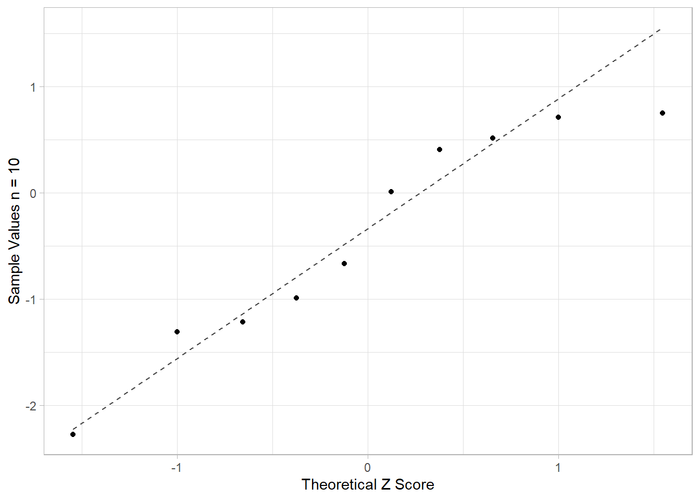
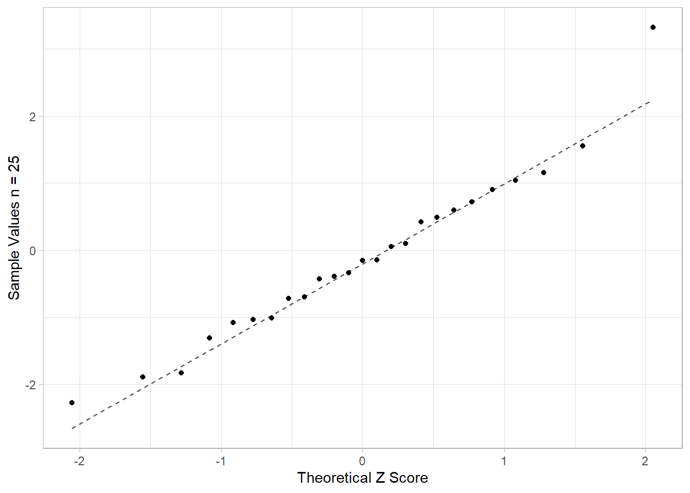
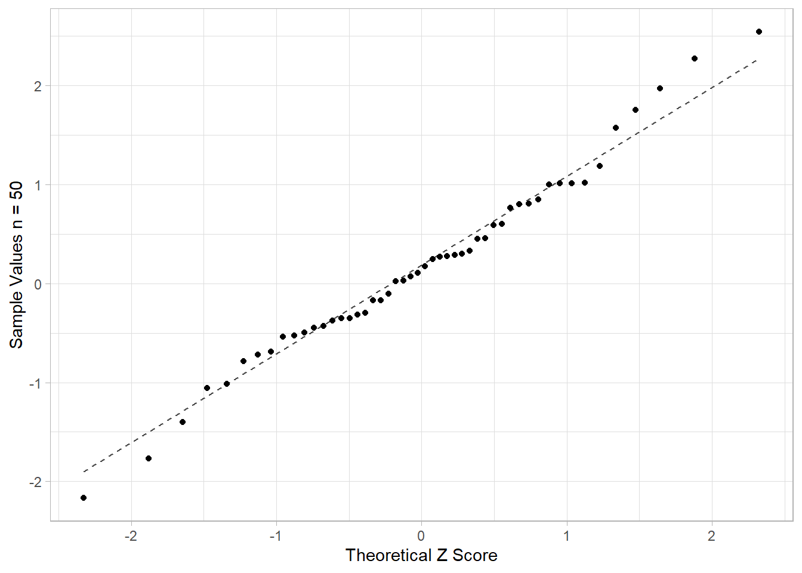
If the Normality Condition fails for small samples, we must use a Nonparametric Test. You can learn more about nonparametric tests in STAT 320, offered spring semesters in even years.
5.3.2 Common Deviation Patterns
We can look at different distributions and how they impact the location of the points relative to the 1:1 line:
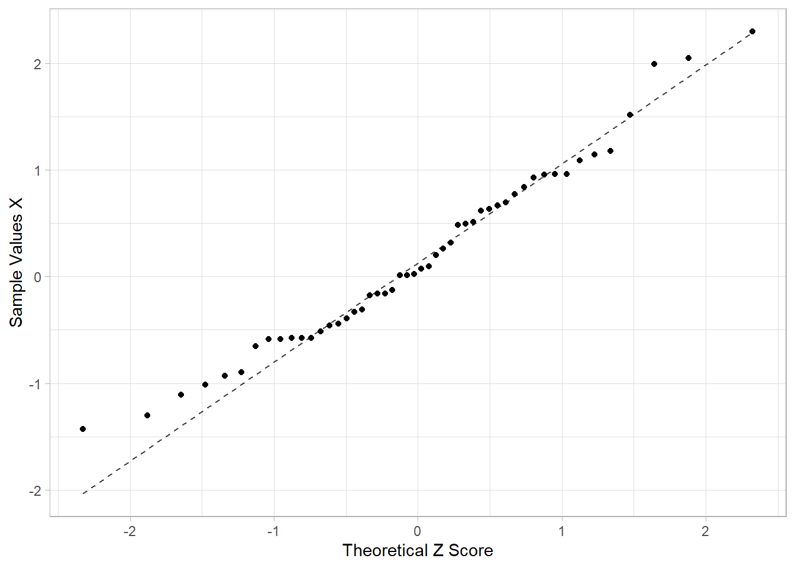
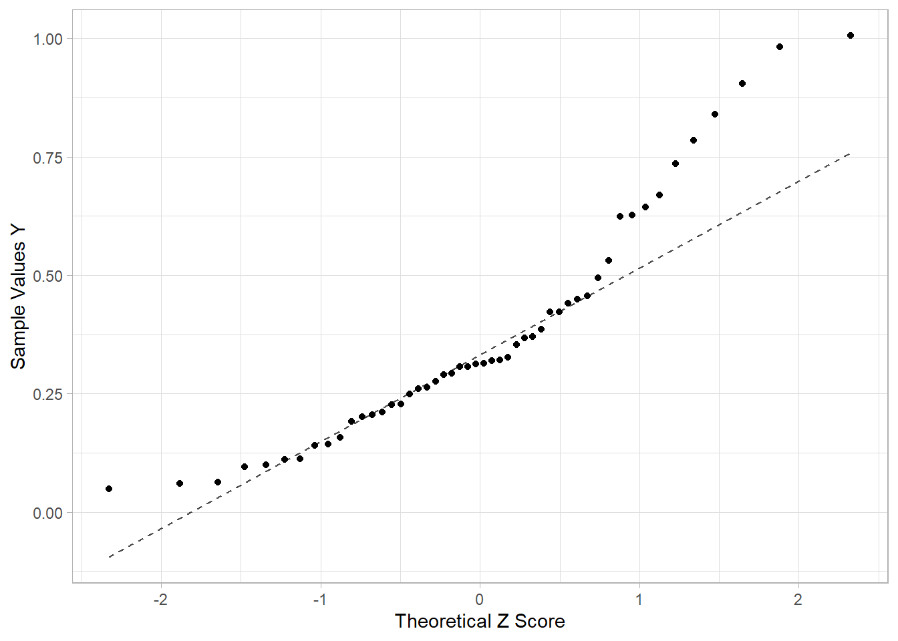
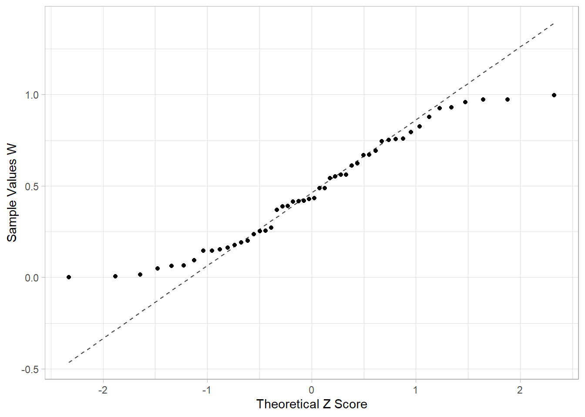
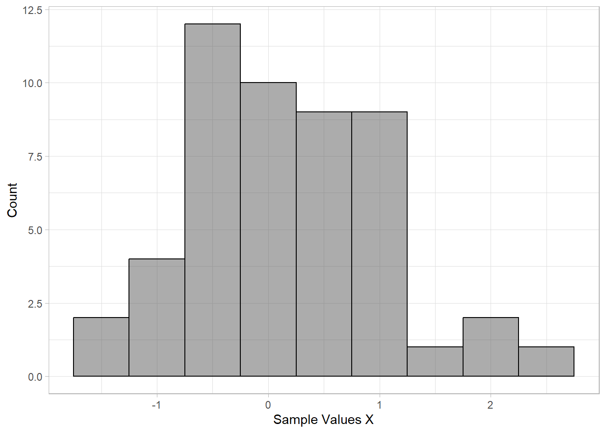
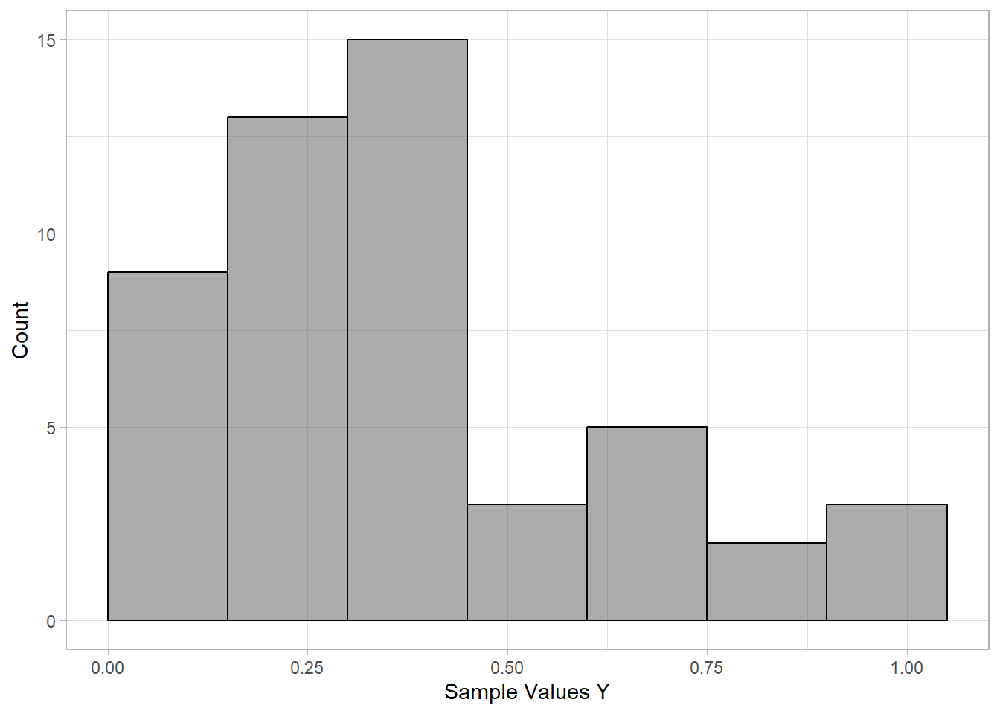
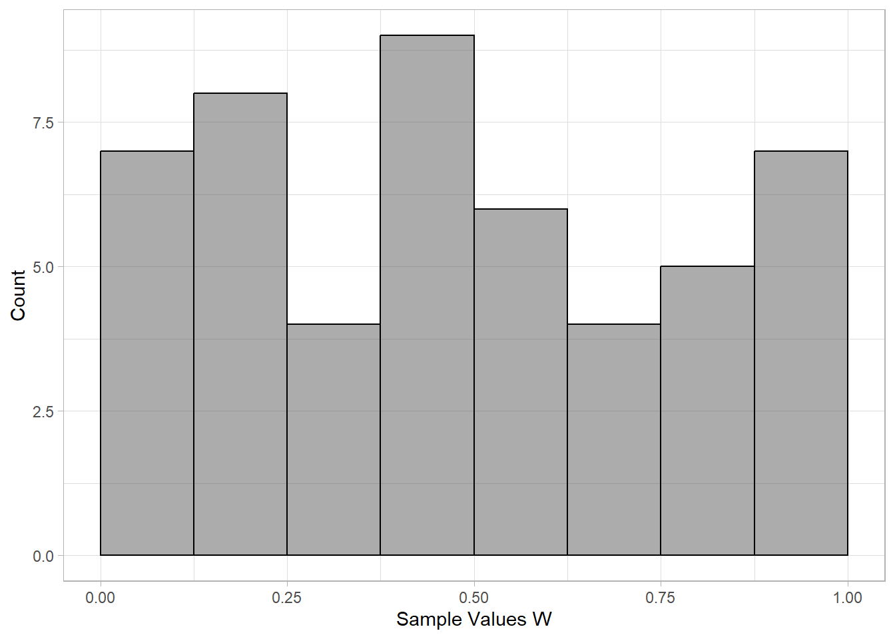
Practice writing evaluations of the QQ Plots for X, Y, and W.
5.3.3 Assessing Normality for Matched-Pairs Samples
When we are comparing Matched-Pairs data, we want to test the normality of the differences.
gf_qq(~(post - pre), data = mathscore,
xlab = "Theoretical Z-Score",
ylab = "Observerd Differences in Post - Pre Scores") |>
gf_qqline()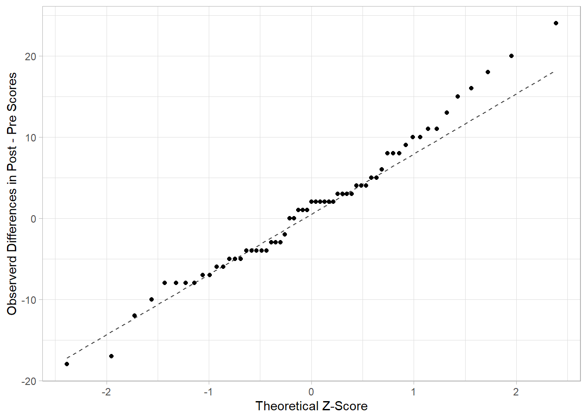
Write an evaluation of the QQ Plot for the Differences in Math Calculation Scores.
6 Wrap-up
In your groups work on the following problems. You can check your answers below. All calculations (numeric answers) must be rounded to four decimals (e.g., 0.6667 instead of 2/3, 0.5 or 0.5000 instead of 1/2) unless specified. Be ready to show your work on the board.
6.0.1 Problem 1
Fill in the blank.
- The [n… a…] implies that a simple random sample is from a normal distribution.
TipAnswer
normal condition/assumption
- The [Q… p…] is a graphical assessment of the normality condition.
TipAnswer
QQ plot
- The [p… t…] is the same as the one-sample t-test, expected all calculations and inferences are made about the differences between two values.
TipAnswer
paired t-test
6.0.2 Problem 2
In a study where the T statistic is 4.4908, and the p-value (for the right-sided test) is 0.00025. If the researchers were interested in the two-sided test, that is \(H_0\): \(\mu_D = 0\) versus \(H_1\): \(\mu_D \ne 0\), what would be the p-value given the same sample?
TipAnswer
0.00025
6.0.3 Problem 3
Multiple-choice: Which of the following is a sign of violating the normality condition?
6.0.4 Problem 4
True or false: If a sample size is very large (substantially larger than 30) and the QQ Plots indicates violation of the normality assumption, the one-sample t-test and CI are not valid.
7 Assignment
7.0.1 Problem 1
A massive outbreak of food-borne illness was attributed to Salmonella enteritidis which can cause fever, abdominal cramps, and diarrhea beginning 12 to 72 hours after consuming a contaminated food or beverage. The illness usually lasts 4 to 7 days, and most people recover without antibiotic treatment. However, the person may be ill enough to require hospitalization. After the outbreak of food-borne illness, investigators identified an ice cream company, and five production runs of the ice cream company were randomly sampled. Let \(\mu\) be the population average level of S. enteritidis among all production runs of the ice cream company. A level of S. enteritidis greater than 0.3 MPN/g (most probable number per gram) is considered to be dangerous in public health. The investigators’ goal is to test if the population average level of S. enteritidis is above the dangerous level.
The researchers collected the following data: (0.593, 0.142, 0.329, 0.231, 0.292). Create the Q-Q plot in R (to be shown in the html file) and interpret it.
# you can read in the data like so, then you do not need to specify the data = in the gf_qq() function
mpn <- c(0.593, 0.142, 0.329, 0.231, 0.292)
TipAnswer
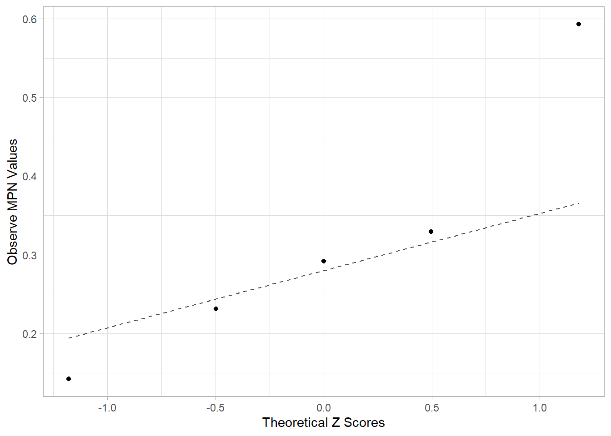
7.0.2 Problem 2
A soccer match is 90 minutes (540 seconds) or longer, so players must have high endurance. Many years ago, the CSUMB Women Soccer Team performed a fitness test known as the YBMI which stands for “You Better Make It.” It was a popular endurance test for college soccer players. It is designed as follows:
Run 800 meters (2-minute rest)
Run 400 meters (2-minute rest)
Sprint 6 yards and back, 18 yards and back, and 60 yards and back (1-minute rest)
Sprint 6 yards and back, 18 yards and back, and 60 yards and back (1-minute rest)
Run 400 meters (2-minute rest)
Run 800 meters (done)
The passing time is 9 minutes (considered to be ready for a match the season) excluding the rest times. The YBMI test was performed before the season and in the middle of the season. In the dataset \(\texttt{ybmi.csv}\), the column \(\texttt{test1}\) is the time to complete the the YBMI test before the season started, and \(\texttt{test2}\) is the time in the middle of the season. The time was measured in seconds. Let \(\mu_{D}\) be the average change in the time (where \(D = \texttt{test2} - \texttt{test1}\)). The coach wanted to test if players’ endurance levels have improved during the season on average.
Download the data here: ybmi.csv
- What is the null value (in seconds) in the null hypothesis \(H_0\)?
TipAnswer
0
- Multiple-choice: What is the alternative hypothesis \(H_1\)?
- Provide descriptive statistics and boxplot for the variable of interest. Describe in words.
TipAnswer
response min Q1 median Q3 max mean sd n missing
1 I(test2 - test1) -143 -122.5 -68 -27.75 -8 -72.25 49.2903 16 0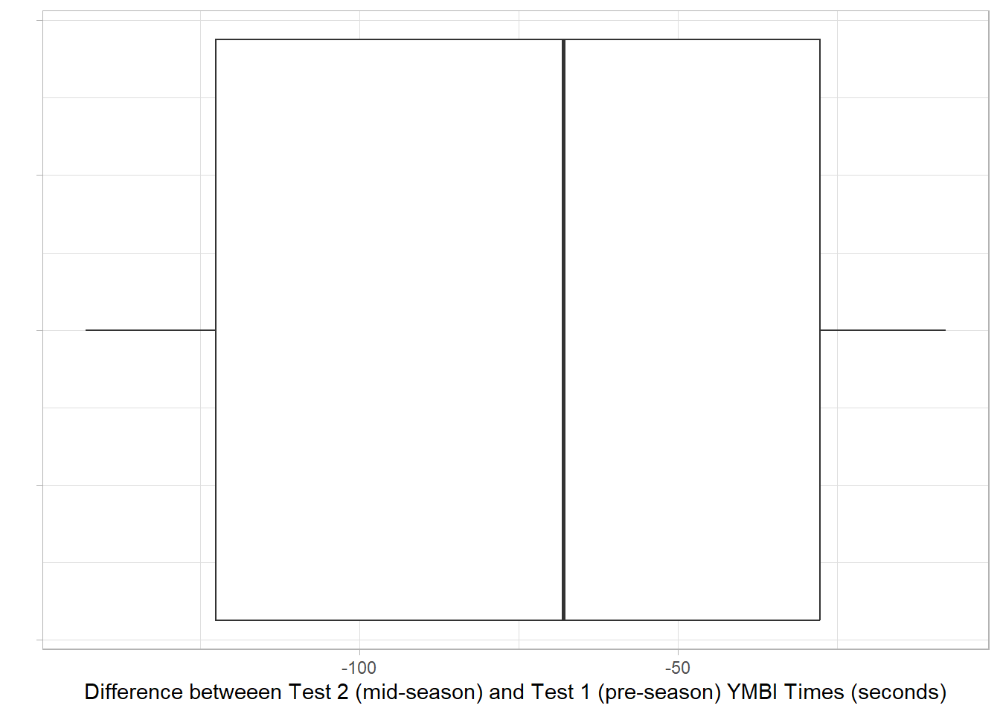
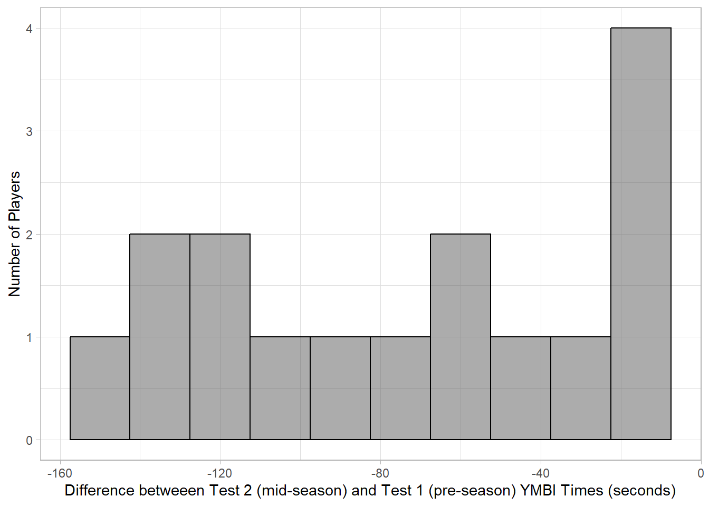
- Calculate the T statistic.
TipAnswer
One Sample t-test
data: (test2 - test1)
t = -5.8632, df = 15, p-value = 1.559e-05
alternative hypothesis: true mean is less than 0
95 percent confidence interval:
-Inf -50.64791
sample estimates:
mean of x
-72.25
TipAnswer
t = -5.8632
- Calculate the p-value.
TipAnswer
p-value < 0.0001 (when you have a tiny p-value, this is acceptable)
- Do you conclude \(H_0\) or \(H_1\) at a significance level of \(\alpha = 0.05\)?
TipAnswer
VERY STRONG evidence against the null in favor of the alternative
- Calculate the lower bound of 95% CI.
TipAnswer
[1] -98.51495 -45.98505
attr(,"conf.level")
[1] 0.95
TipAnswer
-98.51495
- Calculate the upper bound of 95% CI.
TipAnswer
-45.98505
- Create a QQ-Plot for the data
TipAnswer
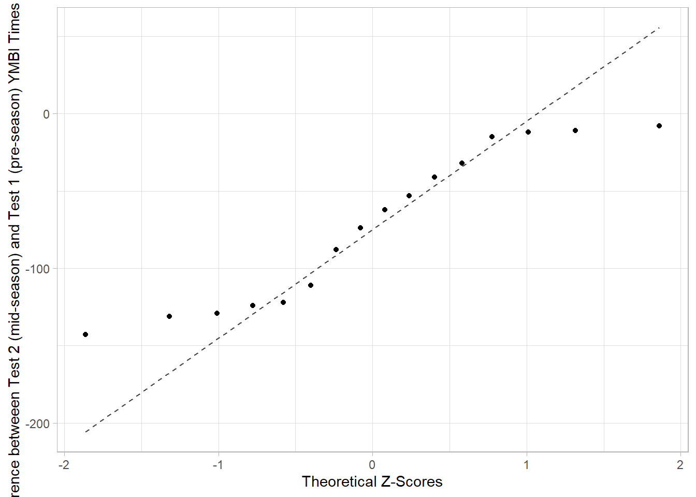
- True or false: According to the QQ Plot there is a sign of violating the normality condition, so the above results are not valid.
7.0.3 Problem 3
Combine your results of Problems 2 and from One Sample t-Test 2 & 3, and write a short statistical report for the coach in 200-300 words. Include one table and one graphic (or one set of graphics).
Be sure that you can write all interpretations and evaluations in context for the above inferences.